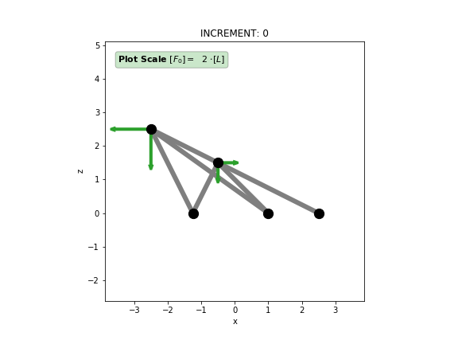

TrussPy is a 3D Truss-Solver written in Py-thon which is capable of material and geometric nonlinearities. It uses an object-oriented approach to structure the code in meaningful classes, attributes and methods. TrussPy contains both multistep functionality (multiple loadcase analysis with sequenced external forces) and an adaptive method to control incremental stepwidths. Input files may be written in Excel or directly in Python. A simple post-processing inside TrussPy is directly available via Matplotlib. Model Plots whether in undeformed or deformed configuration with optional contour plots on element forces are easy to show. They may also be generated for a series of increments and saved as a GIF Movie. Last but not least History (a.k.a. x-y) Plots for a series of increments or Path Plots along a given node path may be generated for nodal properties (displacements, forces) or global quantities like the Load-Proportionality-Factor (LPF).
{kind=link}


Documentation¶
Notes¶
This project evolved out of a homework for the course Nonlinear Structural Analysis (202.482) at Graz University of Technology (Lecturer: Guggenberger, Werner, Ao.Univ.-Prof. Dipl.-Ing. Dr.techn.).
License¶
TrussPy - Object oriented Truss Solver for Python Copyright (C) 2018 Andreas Dutzler
This program is free software: you can redistribute it and/or modify it under the terms of the GNU General Public License as published by the Free Software Foundation, either version 3 of the License, or (at your option) any later version.
This program is distributed in the hope that it will be useful, but WITHOUT ANY WARRANTY; without even the implied warranty of MERCHANTABILITY or FITNESS FOR A PARTICULAR PURPOSE. See the GNU General Public License for more details.
You should have received a copy of the GNU General Public License along with this program. If not, see <https://www.gnu.org/licenses/>.